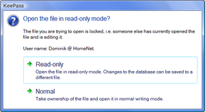
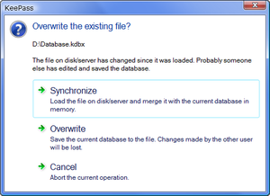

Multi-User
Details about multi-user features of KeePass.
|
Multi-UserDetails about multi-user features of KeePass. |
 General Information about Shared Databases
General Information about Shared DatabasesBoth KeePass 1.x and 2.x allow multiple users working with one database, which is typically stored on a shared network drive or a file server.
All users use the same master password and/or key file to open the database. There are no per-group or per-entry access control lists (ACLs).
In order to restrict write access to the database file (i.e. only a select set of users may change the stored data), use file system access rights.
KeePass 1.x: Office-Style Locking|
With KeePass 1.x, a database can be stored on a shared network drive and used by multiple
users. When a user tries to open a database that is already opened by
someone else, a prompt asks whether to open the database in read-only
or normal mode (see image on the right). By opening a database in normal mode, the current user takes ownership of the file (i.e. subsequent opening attempts will show the current user as owner). KeePass 1.x does not provide synchronization, i.e. by saving the database you are saving your current data to disk. If another user has changed an entry in the meanwhile (i.e. since you loaded the database), these changes are overwritten. |
 |
If you want to use KeePass 1.x with a database on a shared network drive, it is recommended to let an administrator write to the database and let users only read it (ensure this using file system access rights). By using the -readonly command line switch, KeePass will automatically open a given database in read-only mode (i.e. not show the mode prompt). Users would open the database using a shortcut that contains this command line switch.
If there is no central administrator managing the database, users need to be careful to not overwrite each others changes.
KeePass 2.x: Synchronize or Overwrite|
With KeePass 2.x, a database can be stored on a shared network drive and used by multiple
users. When attempting to save, KeePass first checks whether the file on disk has been
modified since it was loaded. If yes, KeePass asks whether to synchronize or
overwrite the file (see image on the right). By synchronizing, changes made by other users (file on disk) and changes made by the current user are merged. After the synchronization process has finished, the current user also sees the changes made by others (i.e. the data in the current KeePass instance is up-to-date). If there is a conflict (multiple users edited the same entry), KeePass uses the latest version of the entry based on the last modification time. |
 |
Note: the synchronize prompt is only triggered by the 'Save' command, not by the 'Save As' command. When executing the 'Save As' command and manually selecting a file, this file will always be overwritten.